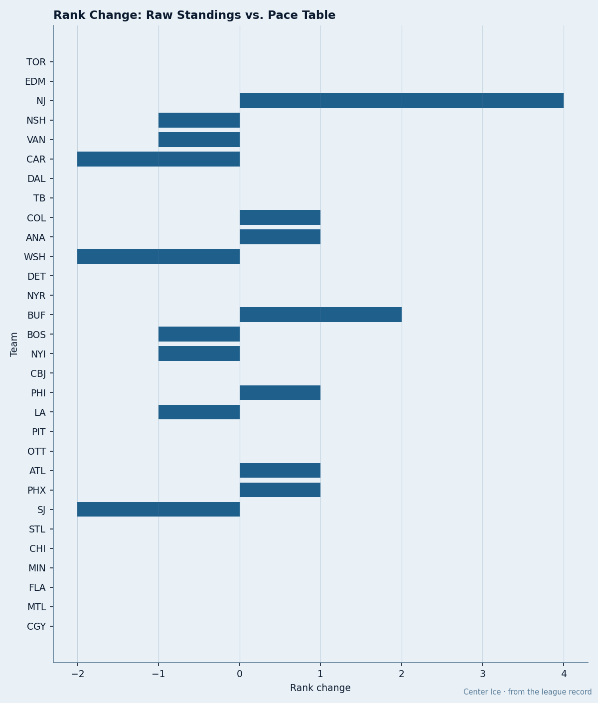
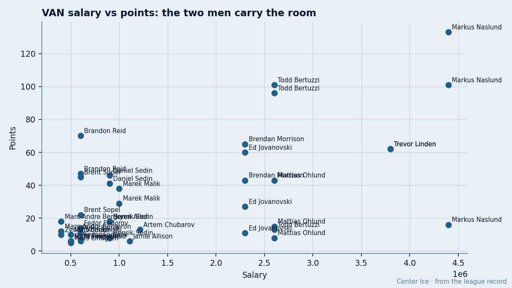

PHI
PHI DET
DET TOR
TOR NYR
NYR$0.49M Per Point, 98.6 Morale: The Cheapest Room in Hockey Is Also the Happiest
Vancouver's payroll produces more points per dollar than any other club. The locker-room data says they know it.
 Doug ReimerAnalytics editor, ex-video coach · The Slot Report
Doug ReimerAnalytics editor, ex-video coach · The Slot Report
Vancouver's payroll is $34.94M. The club has 71 points. That is $0.49M per point, the lowest in the league by $0.02M, and the  Vancouver Canucks locker room carries an average morale of 98.6, the highest by 2.7 points. I wanted to know if that's a coincidence.
Vancouver Canucks locker room carries an average morale of 98.6, the highest by 2.7 points. I wanted to know if that's a coincidence.
It isn't across the whole league, but it is at the top.
The table
The league's per-point column is computed from payroll divided by points. The morale column is the Bureau's club average from the Morale Scale. I put them side by side and sorted by cost.
| Club | Payroll | Points | $M per point | Club morale |
|---|---|---|---|---|
| VAN | $34.94M | 71 | $0.49M | 98.6 |
| EDM | $36.81M | 72 | $0.51M | 93.4 |
| NJ | $44.98M | 70 | $0.64M | 93.1 |
| MIN | $29.97M | 46 | $0.65M | 90.9 |
| NSH | $46.77M | 71 | $0.66M | 93.4 |
| TB | $45.79M | 69 | $0.66M | 93.1 |
| ATL | $36.79M | 50 | $0.74M | 91.4 |
| TOR | $65.94M | 86 | $0.77M | 96.6 |
| BOS | $43.97M | 56 | $0.79M | 92.0 |
| CAR | $55.96M | 70 | $0.80M | 93.0 |
| BUF | $44.16M | 55 | $0.80M | 88.1 |
| OTT | $42.80M | 52 | $0.82M | 88.7 |
| CHI | $39.27M | 46 | $0.85M | 93.5 |
| PIT | $44.95M | 52 | $0.86M | 92.8 |
| SJ | $42.78M | 50 | $0.86M | 89.7 |
| WSH | $57.88M | 67 | $0.86M | 94.9 |
| CBJ | $49.21M | 55 | $0.89M | 85.5 |
| LA | $48.73M | 52 | $0.94M | 91.9 |
| DAL | $66.88M | 70 | $0.96M | 90.1 |
| NYI | $53.57M | 55 | $0.97M | 90.6 |
| PHX | $47.81M | 49 | $0.98M | 90.7 |
| CGY | $43.33M | 42 | $1.03M | 87.4 |
| FLA | $51.07M | 45 | $1.13M | 95.9 |
| MTL | $53.20M | 44 | $1.21M | 88.6 |
| NYR | $77.49M | 63 | $1.23M | 87.4 |
| STL | $56.63M | 46 | $1.23M | 94.4 |
| COL | $71.56M | 65 | $1.10M | 94.9 |
| DET | $80.89M | 63 | $1.28M | 91.6 |
| PHI | $69.34M | 52 | $1.33M | 91.2 |
The pattern is imperfect. FLA carries 95.9 morale on $1.13M per point, the happiest room buying the least. STL sits at 94.4 on $1.23M, a rich room that doesn't mind. But at the very top, the two numbers line up: Vancouver is both the cheapest and the happiest by a clear margin.

Opening the Vancouver book
The structure is unusual. Two men anchor the payroll and the production.  Todd Bertuzzi93 at $2.60M produces 96 points on 54 games: $0.027M per point. He's 30, he's in a contract year, and his morale is 100.
Todd Bertuzzi93 at $2.60M produces 96 points on 54 games: $0.027M per point. He's 30, he's in a contract year, and his morale is 100.  Markus Naslund89 at $4.40M produces 101 points: $0.044M per point. His morale is also 100. The 2 most expensive Vancouver players are the cheapest per point among anyone earning over $2.00M in the league.
Markus Naslund89 at $4.40M produces 101 points: $0.044M per point. His morale is also 100. The 2 most expensive Vancouver players are the cheapest per point among anyone earning over $2.00M in the league.
Below them, the depth does the rest of the work cheaply. The club carries 23 scorers this season, and a large share of them earn $0.90M or less. Fedor Fedorov72 at $0.60M and 51 games sits on the Bureau's top-10 morale list.  Jarkko Ruutu65 at $0.40M and 13 games sits there too. Role players who don't feel cheated.
Jarkko Ruutu65 at $0.40M and 13 games sits there too. Role players who don't feel cheated.

The expensive rooms
Philadelphia at $1.33M per point is the most expensive room in hockey. Their payroll is $69.34M on 52 points. Their club morale is 91.2, 13th in the league. Vancouver's payroll is $34.94M, almost half, and they produce 19 more points.
Detroit at $1.28M per point is next. Their two most expensive contracts tell the story.  Steve Yzerman85 at $7.50M has 22 points on 16 games: $0.341M per point.
Steve Yzerman85 at $7.50M has 22 points on 16 games: $0.341M per point.  Nicklas Lidstrom90 at $10.30M has 65 points on 53 games: $0.158M per point. Both legends, both expensive per point. Compare Bertuzzi at $0.027M per point and you see the structural gap.
Nicklas Lidstrom90 at $10.30M has 65 points on 53 games: $0.158M per point. Both legends, both expensive per point. Compare Bertuzzi at $0.027M per point and you see the structural gap.
The one crack
 Matt Cooke74 sits 9th on the Bureau's Development Index fallers list, down 3 from a base of 82 to 76. He has 4 points in 43 games. His overall fell below every other Vancouver player who appears in the Book. The club average morale is still 98.6, which means Cooke's fall hasn't reached the room. It's one man on 23 scorers.
Matt Cooke74 sits 9th on the Bureau's Development Index fallers list, down 3 from a base of 82 to 76. He has 4 points in 43 games. His overall fell below every other Vancouver player who appears in the Book. The club average morale is still 98.6, which means Cooke's fall hasn't reached the room. It's one man on 23 scorers.
What the structure buys
Vancouver plays  Buffalo Sabres tonight at home. They sit 3rd in the Northwest at 71 points, 1 behind
Buffalo Sabres tonight at home. They sit 3rd in the Northwest at 71 points, 1 behind  Colorado Avalanche and 1 behind
Colorado Avalanche and 1 behind  Edmonton Oilers. Their payroll wouldn't cover half of Detroit's. Their room is the happiest in hockey.
Edmonton Oilers. Their payroll wouldn't cover half of Detroit's. Their room is the happiest in hockey.
Cheap contracts spread across a deep roster produce both cheap hockey and a room where nobody feels shortchanged. The expensive rooms where men are unhappy (Detroit at $1.28M with 33 injury spells and 227 days lost, Columbus at $0.89M with 4 of the league's lowest 15 morale ratings) have the structure inverted.